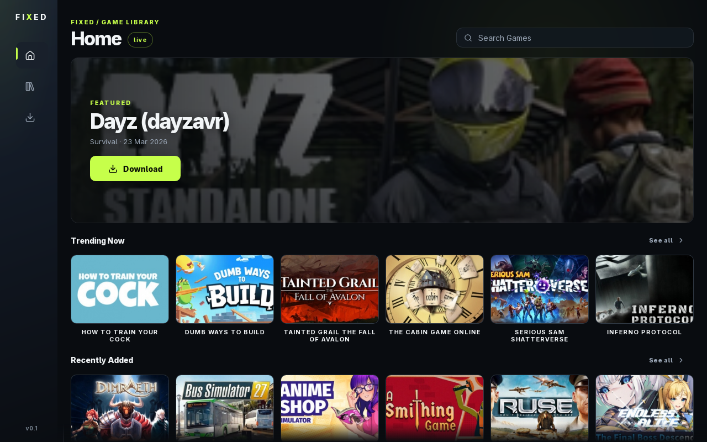
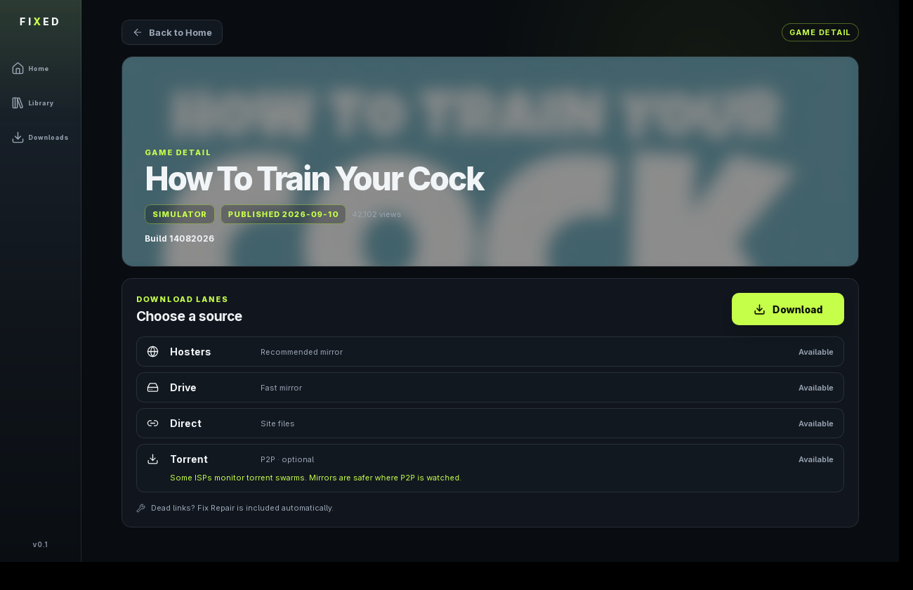
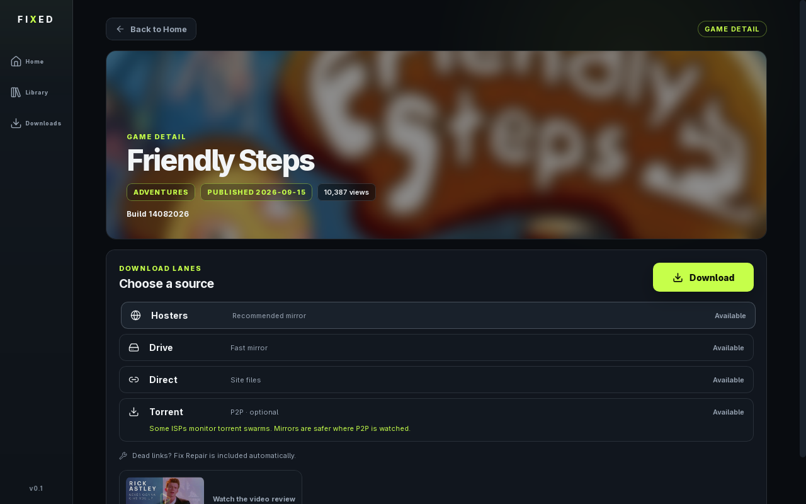
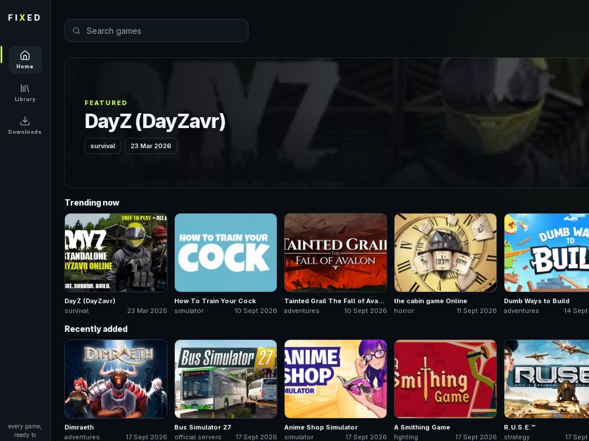

Desktop client
Browse online-fix.me, download with one click, and FIXED handles the rest: extraction, Steam shortcut and a Play button. Zero setup, minimal clicks.




Every step automated. You click Download once.
Download · torrent lane with live progress, mirrors available as manual fallback
Extract · password handled automatically, installers cleaned up after
Steam · non-Steam shortcut with Proton launch options, idempotent
Play · one click launches the game through Steam
Plugins · drop a BepInEx zip, Fix Repair reapplied on top automatically
Real data from online-fix.me with client-side instant search.
Torrent is opt-in per download. ISPs watching P2P? Pick mirrors manually.
Handled. Archives expand and self-clean.
Shortcuts land in your library with the right launch options for Proton.
BepInEx zips install in one click, Fix Repair applied after to keep versions sane.
Tauri v2 + Rust core. Linux and Windows builds via CI.